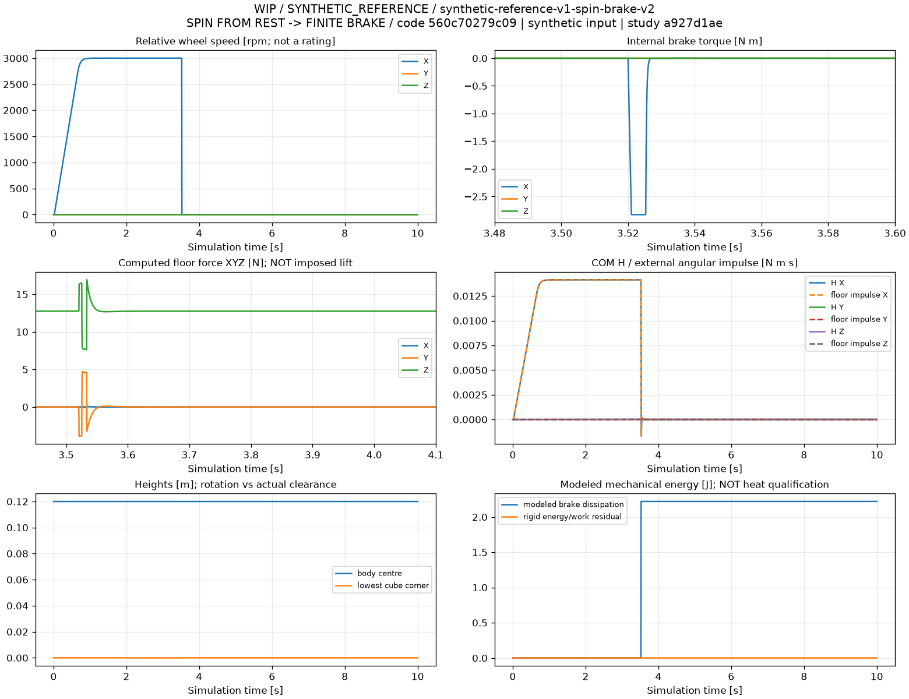
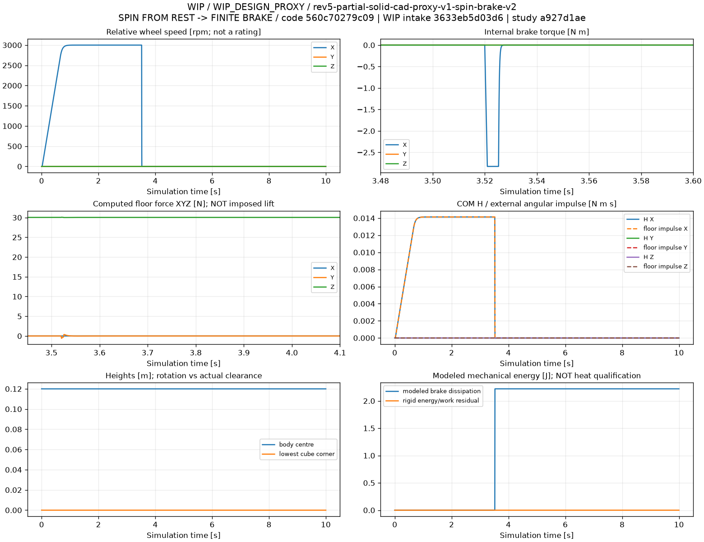
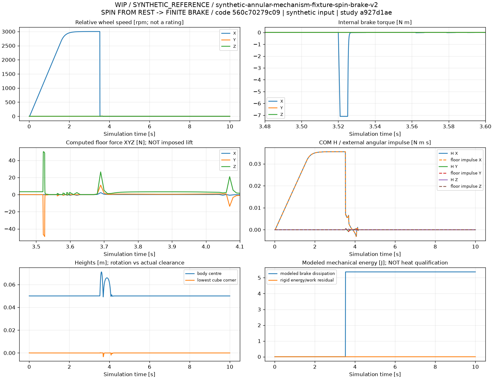

高速回転 → 有限制動：10秒の計算
すべて静止状態から10秒間を実際に積分しています。XYZの外力で持ち上げず、内部ホイールトルクと床反力から運動を計算します。
WIP / 実機の成立性・安全性・制動性能の証明ではありません。
3000 rpmは既存の解析用目標で、定格ではありません。独立した仮想ブレーキの遅延・立ち上がり・トルク容量も仮定です。
100 mmの合成機構モデルは240 mmのRev5部分質量モデルと別物です。辺付近の通過や微小離床を倒立維持・頂点捕捉と呼びません。
ROOTはデータ解析、Blenderは計算軌道の再描画に使い、Fusion組立工程とは区別します。
通常動画は実時間10秒。拡大動画は100倍スローで、0.1秒の計算区間を10秒で表示します。
刻み・ソルバーと補正済み仕事積分の数値記録
startup-reference
Original mathematical reference
Result: TARGET_NOT_REACHED / max body rotation 0.029 deg /
max lowest-corner clearance 0.0000 mm. NO captured balance.
Flight assessment: NO_GAP_CANDIDATE_ABOVE_THRESHOLD.
Tiny contact gaps are not a resolved jump; compare contact/geometry uncertainty and convergence.
100x slow brake detail (10-second video, only 0.1 simulated seconds)
Spin / brake / XYZ floor reaction / momentum / clearance plots |
CSV | Parameters and assumptions |
Hashes

startup-rev5-proxy
Partial WIP design proxy
Result: TARGET_NOT_REACHED / max body rotation 0.002 deg /
max lowest-corner clearance 0.0000 mm. NO captured balance.
Flight assessment: NO_GAP_CANDIDATE_ABOVE_THRESHOLD.
Tiny contact gaps are not a resolved jump; compare contact/geometry uncertainty and convergence.
100x slow brake detail (10-second video, only 0.1 simulated seconds)
Spin / brake / XYZ floor reaction / momentum / clearance plots |
CSV | Parameters and assumptions |
Hashes

startup-mechanism-fixture
Synthetic small annular-wheel fixture; NOT Rev5
Result: TARGET_ATTITUDE_VISITED_NO_CAPTURE / max body rotation 113.803 deg /
max lowest-corner clearance 0.1823 mm. NO captured balance.
Flight assessment: NUMERICALLY_UNRESOLVED_CONTACT_ENVELOPE.
Tiny contact gaps are not a resolved jump; compare contact/geometry uncertainty and convergence.
100x slow brake detail (10-second video, only 0.1 simulated seconds)
Spin / brake / XYZ floor reaction / momentum / clearance plots |
CSV | Parameters and assumptions |
Hashes
